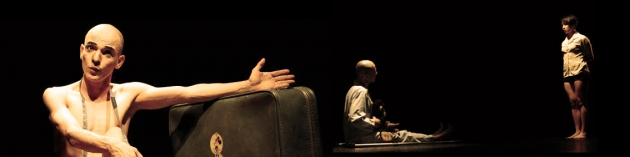

De mi sensación existencial, luego de una resurrección teatral…
Por: El noctívago
“1, 2, 3, 4, …”

Hoy abrí los ojos como todos los días, como todos los monótonos días de mi existencia. La luz me encegueció por unos segundos (justo el tiempo que dura el sueño en irse y uno queda, nuevamente, consciente de la existencia de un cuerpo, el propio cuerpo; el que me posibilita ser reconocido por el otro, quien lo percibe como un dibujo en el espacio). Luego de abrir los ojos, casi de forma automática como lo hago a diario a las siete de la mañana, arrojé la cobija al suelo y en un movimiento simultáneo extendí cada una de mis extremidades al compás de un quejido que se ahogó dentro de mí, justo cuando mis apéndices intentaban deshacerse de cualquier secuela de ese estado de quietud que llamamos dormir. Hoy me he levantado con un día menos de vida… ¿cuántos más me faltaran? Es la primera pregunta y el primer pensamiento que tengo en las mañanas. Hoy, como muchos otros días, no recuerdo el sueño que soñé mientras dormitaba… ¿por qué no lo recuerdo?
La mañana de hoy es fría… me gustan las mañanas así porque el sabor del café es más amargo, porque el silencio es más profundo, más sincero… porque el primer cigarrillo acompasa a cada pensamiento que emerge y se disuelve con las volutas de humo, mientras miro por la ventana y me pierdo en el horizonte que se dibuja en cada pensamiento.
Hoy, luego de abrir los ojos y de abandonar el sueño, plantándolo sobre la cama, decidí realizar un viaje, no exactamente un paseo que incluyera fiambre, tiquetes de bus y estadía en un hotel de bajo presupuesto. Mi viaje era nocturno, pero ya lo había planeado con la llegada de la primera cavilación en la mañana. Mi viaje era sencillo y corto, no muy lejos de casa. En esa migración, de la que omitiré detalles, les contaré, inicialmente, que se trataba de una casa hacia donde me dirigía. En esa casa se daría pie a la resurrección y muerte de un hombre, no por medio de la magia y asuntos místicos y teológicos en los que muchos creen, sino a través del teatro. Al parecer, era la resurrección de un hombre que había muerto varias veces: “una vez fui decapitado, la segunda fui cortado en pedazos, en la siguiente hube de beber plomo derretido y mis intestinos fueron echados a los perros mientras yo colgaba de una cruz al rojo vivo.” -Es lo que nos contó, en esa noche, este nuevo Lázaro.
Lo segundo que les quería contar tenía que ver expresamente con la sensación de vacuidad con la que salí de allí… Sí, luego de haber visto “Las danzas privadas de Jorge Holguín Uribe”, una sensación de silencio enrarecido me cubrió el rostro y el cuerpo entero. Esta “pieza teatral en 22 transfusiones” logró hacerme percibir la forma en cómo el ser humano se deterioraba con el paso de los días y de las noches… la forma en que moríamos; lenta, a veces rápida, pero finalmente dolorosa, así la agonía durara un segundo o una milésima de éste…
Cuando regresé a casa me percaté de que era un poco tarde y volvió a mí ese interrogante fascinante con el que he cerrado mis ojos durante muchas noches, antes de buscar el sueño, sólo que en ese momento era difícil encontrarlo, ¿cuántas noches más me faltarán? –era la pregunta que hacía eco constantemente en mi cabeza.
Aún hace frío y es de madrugada. Mientras fumo, recostado sobre mi cama y con los ojos puestos frente a la ventana, recreo nuevamente cada una de las danzas ofrecidas esa noche, a cada cuerpo que se mimetizaba sobre las tablas al compas de las diferentes formas de musicalización presentes allí. Cuerpos que representan toda existencia, todo lenguaje y todo deseo, incluso, toda muerte. En cada movimiento y en cada palabra no sólo percibí un relato fatídico sino también un fuerte apetito de vida, un impulso creador donde es el cuerpo, la música y las palabras quienes hacen de esta narración, en su conjunto, un sentimiento entrañable y nostálgico en mi.
Posiblemente vivir sea eso, un baile, una gota de sudor que se desprende del cuerpo cuando es el deseo creador quien manipula cada movimiento del cuerpo o de los cuerpos ajenos al propio. Cada movimiento sincronizado, rítmico o arrítmico, tal vez, signifiquen esa temporalidad de hombres con la que nacimos, nuestra condena de finitud y de desaparición. Morimos a diario y resucitamos ¿Cuántas veces tendremos que morir? ¿cuántas nacer?
Fuente: http://elnoctivago.wordpress.com